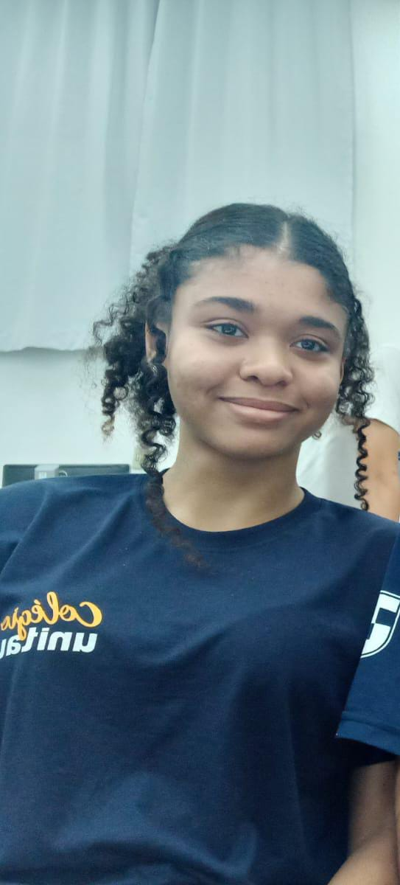

Sobre mim

Função no projeto: organização do funcionamento dos formulários e envio das informações.
Sou estudante de informática no Colégio Unitau e gosto de trabalhar com a organização e modernização de projetos. Na PSYCORE, minha função foi voltada para a parte de back-end, ajudando no funcionamento dos formulários e na lógica de envio das informações.
Contribuições na PSYCORE
- Organização do funcionamento dos formulários.
- Apoio na lógica de envio das solicitações.
- Participação na estrutura dos dados recebidos pelo site.
- Colaboração na parte técnica do cadastro de atendimento e profissionais.
- Ajuda na modernização e organização geral da plataforma.
Habilidades
- HTML e CSS
- Boa comunicação
- Cooperação em grupo
- Curso Técnico de Informática em andamento
Interesses e objetivos
- Dança
- Arte
- Tecnologia
- Atuar como técnica de excelência em grandes empresas
"A arte de criar está em unir estética e propósito."